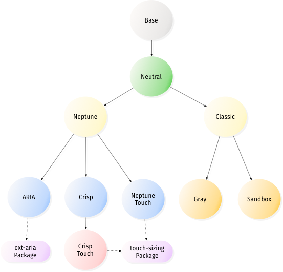

Theming defines the visual motif of your application. A theme is a set of visual aspects that can be easily switched without affecting the basic functionality of your application such as base color, font family, borders, backgrounds, and other CSS properties.
Theming is differentiated from “styling” by the ability to flip a switch and change the theme.
Ext JS 5 includes an overhaul of the theming system that makes it much easier to customize the look and feel of an application. Ext JS themes leverage SASS and Compass, which enable the use of variables and mixins in your stylesheets. Almost all of the styles for Ext JS components can now be customized, including colors, fonts, borders, and backgrounds, simply by changing SASS variables.
Ext JS includes default themes that can be used as a base to create your own custom theme package for use with an Ext JS application.
This tutorial shows you how to create a custom theme that is sharable between applications, how to use that theme in an application, and how to create application-specific styling that is not shared.
Requirements
Sencha Cmd 5
Sencha Cmd is a command-line tool used to package and deploy Ext JS and Sencha Touch applications. To build a theme in Ext JS 5, you must have Sencha Cmd 5 or higher installed on your computer. Sencha Cmd 5 removes the need to have SASS and Compass installed on your computer as it uses its own bundled versions.
For more information about installing and getting started with Sencha Cmd see Introduction to Sencha Cmd.
Ruby
Ruby is an open source programming language that is required to run Sencha Cmd. Refer to the Introduction to Sencha Cmd guide for instructions on installing Ruby.
Ext JS
Custom themes are based on default themes included with the Ext JS SDK.
Sencha Cmd no longer requires you to download Ext JS. You can now use the “-ext” flag in the generate command, which will automatically download the latest version of Ext JS 5. Sencha Cmd will then use that for generating applications.
That said, you can still download Ext JS if you prefer. Simply extract the Ext JS development kit (SDK) to a location of your choosing.
For this tutorial, we’ll assume that you generated your workspace using the “-ext” flag.
Building a Custom Theme
Once you have installed all of the above requirements for theme building, you can proceed with creating a fully customized theme.
Set up the Workspace
The first step in building a custom theme is to set up your workspace using Sencha Cmd.
sencha generate workspace -ext my-workspaceIf you want to use an existing local copy of the SDK, run the following from the command line. Simply replace "~/sencha-5.0.0/" with the path where you unzipped the Ext JS SDK.
sencha -sdk ~/sencha-5.0.0 generate workspace my-workspaceThe ‘generate workspace’ will create the scaffolding for a Sencha workspace in the target directory "my-workspace". This workspace will be location in which you create your custom theme package. You will also create an application here that uses the new custom theme. This command copies the Ext JS SDK and packages into your workspace so that the theme and application can find their required dependencies. The commands for generating the theme and application must be executed from inside the workspace directory. So, at this time, you should change your working directory to the new "my-workspace" directory:
cd my-workspaceYou should now see two directories inside your workspace
"ext"– contains the Ext JS SDK"packages"– contains the Ext JS locale and theme packages
Generating an Application for Testing the Theme
Before creating a custom theme we need to set up a way to test the theme. The best way to test a theme is to use it in an application. Generate a skeleton Ext JS application using the following command from the "my-workspace" directory:
sencha -sdk ext generate app ThemeDemoApp theme-demo-appSencha Cmd will generate an application named ThemeDemoApp in a new sub-directory named "theme-demo-app". The generated application will use the contents of the ‘ext’ directory as the source for the Ext JS SDK. This directory was created in the “my-workspace” directory, and the framework copied into it when the workspace was generated.
cd theme-demo-app
sencha app watchThere are two ways to run your app:
1. Development mode
To view your application in development mode, simply open:
`"my-workspace/theme-demo-app/index.html"`We will use development mode for this tutorial since it uses un-minified source files for easy debugging.
2. Production mode
To view your application in production mode, you will need to build your application with:
sencha app buildOnce built, you can find your application at:
"my-workspace/build/production/ThemeDemoApp/index.html" in a browser.
Production mode uses minified source files for a smaller footprint and better performance for the application.
Generating the Custom Theme Package and File Structure
Sencha Cmd simplifies the process of creating a custom theme by generating a theme package containing all the necessary files required for your custom theme. Run the following command from the theme-demo-app directory:
sencha generate theme my-custom-themeThis tells Sencha Cmd to generate a theme package named "my-custom-theme" in the current workspace. You should see a newly created directory named "my-custom-theme" in the “packages” directory of your workspace. This is the theme package. Lets take a look at the main content:
"package.json"- This is the package properties file. It tells Sencha Cmd certain things about the package like its name, version, and dependencies (other packages that it requires)."sass/"- This directory contains all of your theme’s SASS files. The sass files are divided into 3 main sections:"sass/etc/"- contains additional utility functions or mixins"sass/src/"- contains SASS rules and UI mixin calls that can use the variables defined in “sass/var/”"sass/var/"- contains SASS variables
The files in
"sass/var/"and"sass/src"should be structured to match the class path of the component you are styling. For example, variables that change the appearance of Ext.panel.Panel should be placed in a file named"sass/var/panel/Panel.scss"."resources/" - contains images and other static resources that your theme requires."overrides/"- contains any JavaScript overrides to Ext JS component classes that may be required for theming those components.
Configuring Theme Inheritance.
All Sencha theme packages are part of a larger hierarchy of themes, and each theme package must extend a base theme. The next step in creating your custom theme is to figure out which theme to extend. In the packages directory your workspace you will see the following theme packages:
"ext-theme-base"- This package is the base theme for all other themes, and the only theme package that does not have a parent theme. It contains the bare minimum set of CSS rules that are absolutely required for Ext JS components and layouts to work correctly. The style rules in"ext-theme-base"are not configurable in a derived theme, and you should avoid overriding any of the style rules that are created by this theme."ext-theme-neutral"- The neutral theme extends"ext-theme-base", and contains the vast majority of configurable style rules. Most of the variables that are available for configuring the appearance of Ext JS components are defined in"ext-theme-neutral". These are the variables that can be overridden by your custom theme."ext-theme-neptune"- Modern borderless theme. Extends"ext-theme-neutral"."ext-theme-crisp-touch"- Neptune-Based Touch Theme. Extends"ext-theme-neptune".- This theme includes the
"touch-sizing"package
- This theme includes the
"ext-theme-crisp"- Minimalistic Theme. Extends"ext-theme-neptune"."ext-theme-crisp-touch"- Crisp-Based Touch Theme. Extends"ext-theme-crisp"."ext-theme-classic"- The classic blue Ext JS theme. Extends"ext-theme-neutral"."ext-theme-gray"- Gray theme. Extends"ext-theme-classic"."ext-theme-aria"- Accessibility theme. Extends"ext-theme-neptune".- This theme includes the
"ext-aria"package
- This theme includes the
This chart should make it easier to see how theme inheritance works in Ext JS 5.

So which theme should your custom theme extend? We recommend using either "ext-theme-neptune" or "ext-theme-classic" as the starting point for custom themes. The reason for this is because these themes contain all the code necessary for creating an attractive theme out of the box. The neutral theme should be thought of as a very abstract theme, and should not typically need to be extended directly. Creating a custom theme by overriding "ext-theme-neutral" requires hundreds of variable overrides and many hours of work, and should only be done by very advanced theme developers. However, a custom theme derived from either the Neptune or classic theme can be up and running in minutes by simply changing a couple variables. Additionally you can override "ext-theme-gray" or "ext-theme-aria" if they provide a more desirable starting point for your custom theme.
In this tutorial, we will create a custom theme that extends the Neptune theme. The first thing to do is configure your custom theme with the name of the theme it is extending. This is done by changing the ‘extend’ property in the “packages/my-custom-theme/package.json” from its default value as shown here:
"extend": "ext-theme-classic"to:
"extend": "ext-theme-neptune"You now need to refresh your application. This ensures that the correct theme JavaScript files are included in the application’s “bootstrap.js” file so that the application can be run in development mode. Run the following command from the “theme-demo-app” directory.
sencha app refreshYour custom theme is now configured to use the Neptune theme as a base. But you still need to make your own changes to it, as right now - it is identical to Neptune. Now you can proceed to add custom changes to your theme.
Configuring Global Theme Variables
Let’s start by modify the base color from which many Ext JS components’ colors are derived. Create a file called Component.scss in "my-custom-theme/sass/var/". Add the following code to the Component.scss file:
$base-color: #317040 !default;Be sure to include !default at the end of all variable assignments if you want your custom theme values to be extensible. Without !default you will not be able to override the variable in a derived theme, because Sencha Cmd includes variable files in “reverse” order - most-derived theme first, base theme last. For more information on the use of !default see Variable Defaults
The value of $base-color must be a valid HTML color code; see the HTML Color Codes web page.
For the complete list of Ext JS global SASS variables see Global_CSS.
Building the Package
Now that you’ve modified the base color to your theme, you need to build an updated version of the theme css file containing all the style rules for your theme. From the "packages/my-custom-theme/" directory run the following command:
sencha package buildBuilding the package creates a “build” directory in your theme package directory. Inside "my-custom-theme/build/resources" you will find a file named my-custom-theme-all.css. This file contains all the style rules for all Ext JS components for your theme. You can link directly to this file from your app but this is not recommended because the "all" file contains all styles for every Ext JS component and most apps only use a subset of Ext JS components. Sencha Cmd has the ability to filter out unused CSS style rules when you build an app, but first we need to configure the test app to use the custom theme.
Using a Theme in an Application
At this point you can start sencha app watch in your application’s directory.
This will monitor your application for changes and automatically re-build and refresh your application. Please note that sencha app watch does NOT currently monitor packages.
To configure your test application to use your custom theme, find the following line in theme-demo-app/app.json
/**
* The name of the theme for this application.
*/
"theme": "ext-theme-neptune",and replace it with:
/**
* The name of the theme for this application.
*/
"theme": "my-custom-theme",Refresh "theme-demo-app/index.html" in a browser once sencha app watch finishes process the change. You should see the green color we specified earlier as $base-color applied to the components on the screen.
Configuring Component Variables
Each Ext JS component has a list of global variables that can be used to configure its appearance. Let’s change the font-family of Panel Headers in "my-custom-theme". Create a file named "packages/my-custom-theme/sass/var/panel/Panel.scss" and add the following code:
$panel-header-font-family: Times New Roman !default;Now build your app by running the following command from the "theme-demo-app" directory.
sencha app buildOpen "theme-demo-app/index.html" in a web browser and you should see that the panel header uses “Times New Roman” font.
You can find the complete list of SASS variables for each component in the “CSS Variables” section of each page in the API docs. For example, see Ext.panel.Panel and scroll down to the section titled “CSS Variables”
Creating Custom Component UIs
Every component in the Ext JS framework has a user interface (UI) configuration, which defaults to default. This property can be configured on individual component instances to give them a different appearance from other instances of the same type. This is used in the Neptune theme to create different types of Panels and buttons. For example, panels with the ‘default’ UI have dark blue headers and panels with the ‘light’ UI have light blue headers. Buttons use UIs to give toolbar buttons a different appearance from regular buttons.
The ext-theme-neutral theme includes SASS mixins for many different Ext JS components. You can call these mixins to generate new UIs for components. Available mixins for each component are listed in the API documentation. For example, see Ext.panel.Panel and scroll down to the “CSS Mixins” section to see what parameters the Panel UI mixin accepts. Let’s use this mixin to create a custom Panel UI. Create a file named "packages/my-custom-theme/sass/src/panel/Panel.scss" and add the following code to it:
@include extjs-panel-ui(
$ui-label: 'highlight-framed',
$ui-header-background-color: red,
$ui-border-color: red,
$ui-header-border-color: red,
$ui-body-border-color: red,
$ui-border-width: 5px,
$ui-border-radius: 5px
);This mixin call creates a new Panel UI named “highlight-framed” which has a red header background, red bordering, 5px border, and 5px border-radius. To use this UI, configure a Panel with “highlight” as its “ui” property (the “-framed” suffix is added to the UI of a panel when you set the frame config to true). Open "theme-demo-app/app/view/Main.js" and replace the items array with the following:
items: [{
// custom "highlight" UI
xtype: 'panel',
ui: 'highlight-framed',
frame: true, // Make sure to add this config to see the frame highlight changes
bind: {
title: '{name}'
},
region: 'west',
html: '<ul><li>This area is used for navigation, for example, using a "tree" component.</li></ul>',
width: 250,
split: true,
tbar: [{
text: 'Button',
handler: 'onClickButton'
}]
},{
region: 'center',
xtype: 'tabpanel',
items:[{
title: 'Tab 1',
html: '<h2>Content appropriate for the current navigation.</h2>'
}]
}]If you still have sencha app watch running, the change to Main.js should have been picked up.
Open "theme-demo-app/index.html" in a web browser and you should see the red “highlight” panel in the west region.
While UI mixins are a handy way to configure multiple appearances for a component, they should not be overused. Each call to a UI mixin generates additional CSS rules. Gratuitous calls to UI mixins can produce an overly large CSS file.
Another important point to remember when calling UI mixins is to call the mixin by passing its named parameters, not an ordered list of parameter values. Although SASS supports both forms it’s best to use this form:
@include extjs-component-ui(
$ui-foo: foo,
$ui-bar: bar
);And avoid this form:
@include extjs-component-ui(foo, bar);Due to the complexity and number of mixin parameters, we cannot guarantee that the order will stay the same if new parameters are added, or if a deprecated parameter is removed. It is safest to always specify the parameters by name and not by ordinal names when calling UI mixins.
Modifying Image Assets
All required image assets are inherited from the parent theme by default, but in some cases you may need to override an image. This can be easily done by placing the desired image in "my-custom-theme/resources/images/" and giving it the same name as the image it is intended to override. For example, let’s change the info icon of the MessageBox component. Save the following image as "packages/my-custom-theme/resources/images/shared/icon-info.png"
Now modify your test application to show a MessageBox that uses the custom icon. Add the following items array to the highlight panel in your application’s "theme-demo-app/app/view/Main.js":
...
tbar: [{
text: 'Button',
handler: 'onClickButton'
}],
items: [{
xtype: 'button',
text: 'Show Message',
handler: function() {
Ext.Msg.show({
title: 'Info',
msg: 'Message Box with custom icon',
buttons: Ext.MessageBox.OK,
icon: Ext.MessageBox.INFO
});
}
}]
...Now build your app by running the following command from the "theme-demo-app" directory.
sencha app buildNow view the app in the browser. When you click the button you should see that the MessageBox contains a friendly face.
Slicing Images for CSS3 effects in IE
In many cases when creating new UI’s, you will want to include background gradients or rounded corners. Unfortunately, legacy browsers do not support the CSS3 properties for these effects, so we must use images instead. Sencha Cmd includes the ability to automatically slice these images for you. To do this, we need to tell Sencha Cmd which components need slicing. The files that contain the slicing configuration are contained in the "sass/example/" directory of a theme. To get an idea of what these files look like, let’s look at the "packages/ext-theme-base/sass/example/" directory in your workspace:
"shortcuts.js"- This file contains the base configurations for the types of components that can be sliced. Most custom themes do not need to contain a"shortcuts.js"file; it is necessary only if your theme includes styling for custom components. Your theme inherits all of the shortcuts defined in its base themes, and you can add additional shortcuts if needed by callingExt.theme.addShortcuts()in the"shortcuts.js"file in your theme."manifest.js"- This file contains the list of component UIs for which sliced images will be generated when you build your theme. A theme inherits all manifest entries from its parent themes, and can add its own manifest entries by calling theExt.theme.addManifest()function in its own"manifest.js"file."theme.html"- This is the file that renders the components defined in the"manifest.js"file. Sencha Cmd renders"theme.html"in a headless WebKit browser, and takes a screenshot of the page. It then uses this screenshot to slice the required images for displaying rounded corners and gradients in IE.
To create slices for the rounded corners of the “highlight” panel UI that you created earlier in this tutorial, create a file named "packages/my-custom-theme/sass/example/manifest.js" and add the following code to it.
Ext.theme.addManifest(
{
xtype: 'panel',
ui: 'highlight'
}
);Now edit "packages/my-custom-theme/sass/example/theme.html" and add the following script tags:
<!-- Required because Sencha Cmd doesn't currently add manifest.js from parent themes -->
<script src="../../../ext-theme-neptune/sass/example/manifest.js"></script>
<!-- Your theme's manifest.js file -->
<script src="manifest.js"></script>That ensures that the UIs defined in ext-theme-neptune and my-custom-theme get sliced correctly when you build the my-custom-theme package using sencha package build. You must also add these 2 script tags to "theme-demo-app/sass/example/theme.html", so that the UIs will get sliced when building the app using sencha app build:
<script type="text/javascript" src="../../../../ext/packages/ext-theme-neptune/sass/example/manifest.js"></script>
<script type="text/javascript" src="../../../../ext/packages/my-custom-theme/sass/example/manifest.js"></script>In the future, it will seldom be necessary to modify "theme.html" manually but, in Sencha Cmd 5, script tags for "shortcuts.js" and "manifest.js" are not added automatically.
That’s all there is to it. Now just build the demo app again, and run it in IE8 or below. You should see rounded corners on the “highlight” panel that look just like the ones creates using CSS3 when you run the app in a modern browser.
Theme JS Overrides
Sometimes a theme needs to change the appearance of some aspect of a component that is only configurable via JavaScript. This can easily be accomplished by adding a JavaScript override to your theme package. To demonstrate how this is done, let’s change the titleAlign config of Panels in the custom theme. Create a new file named "packages/my-custom-theme/overrides/panel/Panel.js" and add the following code:
Ext.define('MyCustomTheme.panel.Panel', {
override: 'Ext.panel.Panel',
titleAlign: 'center'
});Now lets build the theme package so that "packages/my-custom-theme/build/my-custom-theme.js" will include the new override. From the "packages/my-custom-theme/" directory run:
sencha package buildYou should now refresh the application so that the theme’s JS overrides will get included when running the application in development mode. Run the following command from the "theme-demo-app" directory:
sencha app refreshNow build the app from the theme-demo-app directory:
sencha app buildThen open "theme-demo-app/index.html" in the browser. You should notice that all Panel headers have centered titles.
Although any Ext JS component config can be overridden in this manner, best practice is to only use theme overrides to change those configs that directly affect the visual appearance of a component.
The SASS Namespace
As described above, Sencha Cmd looks for files in "sass/var" and "sass/src" that match up with JavaScript classes. By default, for themes, the Ext namespace is assumed to be the top-level namespace and so your theme would have a "sass/src/panel/Panel.scss" file corresponding to Ext.panel.Panel.
For a theme to apply outside the Ext namespace, you must change a config property called package.sass.namespace in ".sencha/package/app.json". To be able to style all components in your theme, you will need to set this as blank:
/**
* Sass configuration properties.
*/
"sass": {
/**
* The root namespace to use when mapping *.scss files to classes in the
* sass/src and sass/var directories. For example, "MyApp.view.Foo" would
* map to "sass/src/view/Foo.scss". If we changed this to "MyApp.view" then
* it would map to "sass/src/Foo.scss". To style classes outside the app's
* root namespace, change this to "". Doing so would change the mapping of
* "MyApp.view.Foo" to "sass/src/MyApp/view/Foo.scss".
*/
"namespace": ""
},With this set, the file you need to create to correspond with Ext.panel.Panel is "sass/src/Ext/panel/Panel.scss".
Adding Custom Utility SASS
If your theme requires SASS functions or mixins that are not related to component styling, e.g. utilities, these should be placed in the theme’s "sass/etc" directory. You can organize files in this directory however you like, but the only file that Sencha Cmd includes in the build is "sass/etc/all.scss". Any other files must be imported by the "all.scss" file. For an example that follows this pattern see "packages/ext-theme-base/sass/etc/".
Migrating a Theme from Ext JS 4.1 or earlier.
In Ext 4.1, theming was done quite differently. Typically, all the SASS variables would be placed in one "all.scss" file, and at the end of the file, the base theme’s “all.scss” file would be imported. The best starting point for migrating an existing theme is to place all the old SASS variables in the theme’s "sass/etc/all.scss" file. Any SASS rules that the legacy theme had should be placed in "sass/src/Component.scss". Then try to build the theme or an app that uses the theme as described above. Eventually you may want to move the variables and rules into the files that correspond to the components being styled.
Styling Your Application
Styling that is not shared between applications belongs in the application itself, not in the theme. Sencha Cmd provides an easy way to add application-level styling by following the same pattern as theme styling. The application acts as the final level in the theme hierarchy. Applications can change theme variables, and they can add their own custom variables and rules for styling the application’s views.
Changing Theme Variables in Your Application
Let’s continue using the "theme-demo-app" application created above, and override the theme’s $base-color in the application. Create a file named "theme-demo-app/sass/var/view/main/Main.scss" and add the following code:
$base-color: #333;Then build the app by running the following command from the "theme-demo-app" directory:
sencha app buildOpen the application’s "index.html" page in a browser and you will see that the color has changed to gray.
Notice how we did not use !default when setting the $base-color variable. !default is used for setting variables in themes, because those theme variables might need to be overridden in a derived theme, or in an application. !default is not needed here because the application is the end of the line in the theme inheritance tree.
You may also be wondering why we set $base-color in "Main.scss" instead of "Component.scss" like we did when changing the $base-color for a theme. The reason for this is because the namespace that Sencha Cmd uses for resolving SCSS file names is the namespace of the application. For each class in your application, Sencha Cmd checks for a corresponding scss file in "sass/var/" for variables, and "sass/src/" for rules. Since the application has a class named ThemeDemoApp.view.Main, the "sass/var/view/main/Main.scss" file gets included in the build. "sass/var/Componenent.scss" is not included unless the application had a class named “ThemeDemoApp.Component”.
Styling Your Application’s Views
CSS style rules for your application’s views should go in the app’s "sass/src/" directory in a scss file that has the same path and name as the view it is styling. Let’s style the center panel in the ThemeDemoApp application. Since that panel is defined in ThemeDemoApp.view.Main, the CSS rule that styles it goes in "sass/src/view/Main.scss":
.content-panel-body {
background-color: #ccc;
}Add the “content-panel-body” CSS class to the body of the center panel in your application’s Main.js file:
...
xtype: 'panel',
ui: 'highlight',
bodyCls: 'content-panel-body',
frame: true,
...You should see a gray background-color on the body of the center tabpanel.
The SASS Namespace
Similar to themes, applications also have "sass/var" and "sass/src" folders and these also correspond to the JavaScript class hierarchy. For an application, the top-level namespace is specified by name in "app.json". By default this value is the application’s namespace.
This default is most convenient for styling just your application’s views since these are most likely in your application’s namespace. To style components outside your application namespace, you can change app.sass.namespace but it may be a better idea to create a theme instead.
Organization of Generated SASS
When using themes as described above, the SASS from your theme and from your application as well as from required packages (see Sencha Cmd Packages) is combined in an "app-all.scss" file that is then compiled by Compass. It is important to understand the structure of this file so that you know what you can use from your theme or required packages and when.
The structure of the "all.scss" file generated for your application is this:
+---------------------------------------+
| inclusion flags |
+-----------+-----------+---------------+
| | | base |
| | theme +---------------+
| | | derived |
| +-----------+---------------+
| | |
| etc | packages (dep order) |
| | |
| +---------------------------+
| | |
| | application |
| | |
+-----------+---------------------------+
| | |
| | application |
| | |
| +-----------+---------------+
| | | derived |
| var | theme +---------------+
| | | base |
| +-----------+---------------+
| | |
| | packages (dep order) |
| | |
+-----------+-----------+---------------+
| | | base |
| | theme +---------------+
| | | derived |
| +-----------+---------------+
| | |
| src | packages (dep order) |
| | |
| +---------------------------+
| | |
| | application |
| | |
+-----------+---------------------------+Inside the “bands” for "sass/var" and "sass/src", the individual ".scss" files for a given theme, package and the application are always ordered to match the JavaScript class hierarchy. For example, if the “base” theme had ".scss" files for Ext.window.Window and Ext.panel.Panel in its "sass/var" folder, the file for Ext.panel.Panel would be included before the file for Ext.window.Window since it extends Ext.panel.Panel.
The goals and rationale for this particular structure are as follows:
- In the
"sass/etc"space, utilities and the like from base themes should be available to derived themes. - Packages should be able to use facilities provided by the current theme.
- Applications should be able to use their theme and any required packaged.
- In the
"sass/var"space, the concerns are variable control and derived calculation. - Applications must be able to control all variables so their
varscome first. - Themes come next so that they pick up application variable values, but they come in “reverse” order from most derived theme to base. This allows the derived theme to set any variables it wants that have not already been set by the application or a more derived theme.
- Package variables are introduced in their package dependency order. This allows package variables to derive the values from the current theme (most importantly, from the
base-color). - In the
"sass/src"section, the order is the same as for"sass/etc". This provides the proper cascade of rules so that derived theme rules can easily “win” over rules from their base theme(s). - The application cascades in last so that its rules always have the final authority.
Inclusion Flags
The “inclusion flags” section is a set of variables defined to be true or false for each JavaScript class that could be included. The value of this variable is true if that class is being included. For example, if the build uses Ext.grid.Panel, this line is present in this section:
$include-ext-grid-panel: true;If this build does not include Ext.menu.ColorPicker then this line is present:
$include-ext-menu-colorpicker: false;Sharing a Theme Between Applications
It’s easy to share the theme you’ve just built with a second application. Simply navigate to the “my-workspace” directory and run the following command:
sencha -sdk ext generate app AnotherApp another-appThis tells Sencha Cmd to generate an app in the “another-app” directory named “AnotherApp” and to use the same Ext JS SDK as the first app you created.
The next step is to tell the app to use the custom theme: Edit “another-app/app.json” and replace the following line:
/**
* The name of the theme for this application.
*/
"theme": "ext-theme-neptune",with:
/**
* The name of the theme for this application.
*/
"theme": "my-custom-theme",Now build the app. From the “another-app” directory run:
sencha app buildThen open “another-app/index.html” page in your browser. You should see a starter app that uses the same custom theme as ThemeDemoApp.